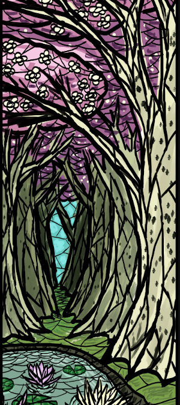
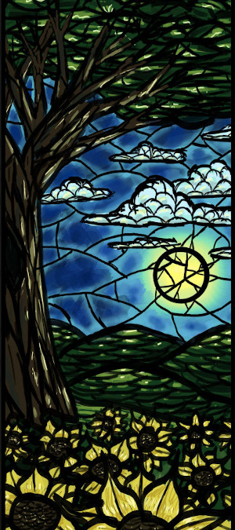
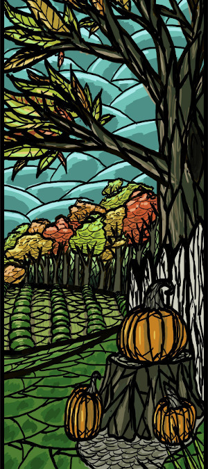
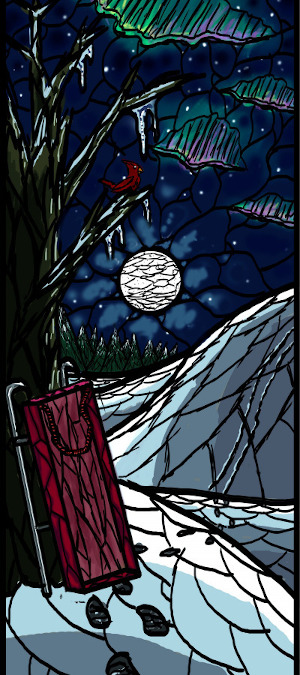

|
''Времена года'' (итал. Le quattro stagioni «Четыре времени года») венецианского композитора Антонио Вивальди — первые четыре скрипичных концерта из двенадцати концертов его восьмого опуса, цикла «Спор гармонии с изобретением (англ.)русск.», одни из самых
знаменитых его произведений и одни из известнейших музыкальных произведений в стиле барокко. Концерты написаны в 1723 году и впервые опубликованы два года спустя. На первом исполнении Вивальди лично играл партию скрипки. Каждый концерт посвящён одному времени года, каждый состоит из трёх частей, крайние части являются быстрыми, а средняя медленной, как и в последующих 8 концертах опуса и как в подавляющем большинстве концертов Вивальди, что впоследствии
у других композиторов стало характерно для концерта как жанра. (Несмотря на то, что концертов 4, а частей в них традиционно по 3, то есть всего частей 12, из этого не следует полагать, что части каким-либо образом соответствуют
12 месяцам.) Каждому из концертов композитор предпослал сонет — своего рода литературную программу. Предполагается, что автором стихов является сам Вивальди.
|
|||
|  |  |  |  |